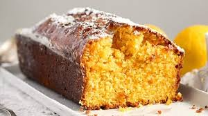

Queque de Zanahoria

Ingredientes
- 2 tazas de azúcar (400 gramos)
- 4 huevos enteros
- 1 taza de aceite vegetal
- 3 tazas de zanahoria rallada
- 2 tazas de harina (280 gramos)
- 1 cucharadita de bicarbonato
- 2 cucharaditas de canela en polvo
- 1 cucharadita de polvo de hornear
- 1 pizca de sal
Preparacion
Para realizar este queque de zanahoria, coge un recipiente con la capacidad suficiente y añade todos los
ingredientes, excepto la harina, y bátelos bien. Por otra parte, precalienta el horno a 180º C.ara realizar
este queque de zanahoria, coge un recipiente con la capacidad suficiente y añade todos los ingredientes,
excepto la harina, y bátelos bien. Por otra parte, precalienta el horno a 180º C.
Cuando tengas todos los ingredientes mezclados, incorpora la harina poco a poco y sin dejar de batir. Es importante
que la tamices previamente para que te sea más fácil integrarla a la masa de queque de zanahoria. Además, así
asegurarás también que el resultado final que obtengas sea un queque de zanahoria esponjoso y firme.
Una vez tengas la masa del bizcocho de zanahoria lista, unta un poco de mantequilla en un molde apto para horno, o
espolvorea harina, y vierte en él la masa. Hornea el queque casero durante 40 minutos, aproximadamente. El tiempo
final variará en función de la potencia del horno, por lo que deberás vigilarlo mientras se hornea.
Para saber si está listo, pínchalo con un palillo. Si sale limpio, ya puedes retirarlo. Deja que se enfríe y desmóldalo.
Puedes servir el queque de zanahoria tal como está o preparar un frosting de vainilla o merengue de azúcar y cubrirlo con
él a modo de decoración. También puedes espolvorearlo con azúcar glass para darle un toque sencillo y dulce.